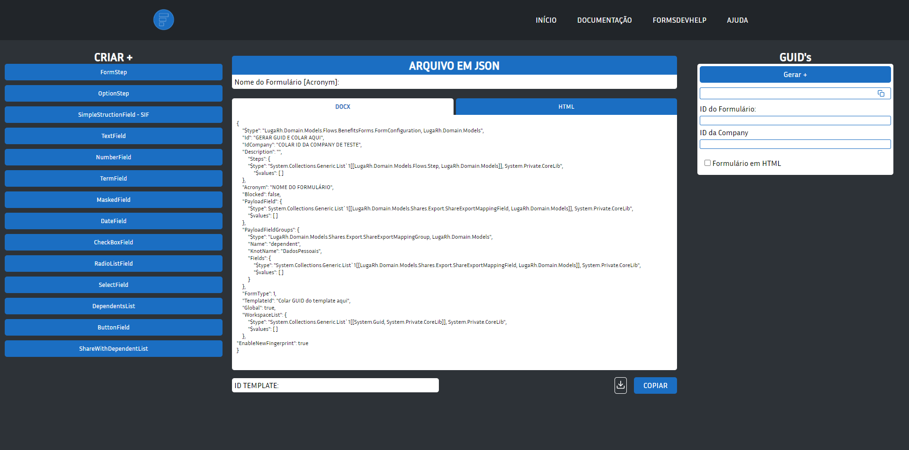

Sobre o projeto
A documentação a seguir descreve o projeto FormsDevHelper, um sistema destinado a automatizar a criação e gerenciamento de formulários. Este documento tem como objetivo fornecer uma visão geral do projeto, seu propósito, escopo e principais funcionalidades. Ele servirá como referência para os desenvolvedores, stakeholders e demais envolvidos no projeto.
Objetivos
O objetivo principal do FormsDevHelper é fornecer uma solução que permita aos usuários criar formulários de maneira rápida e fácil, sem exigir conhecimentos avançados em programação. Além disso, o projeto visa:
- Oferecer uma interface intuitiva e amigável para a criação e edição de formulários.
- Permitir a personalização dos campos do formulário, incluindo tipos de entrada, validações e formatações.
- Facilitar a coleta, armazenamento e organização dos dados submetidos pelos usuários.
- Garantir a segurança dos dados coletados, implementando medidas de proteção e conformidade com regulamentações de privacidade.
Principais tecnologias utilizadas no projeto:
[HTML]
- [CSS]
- [JAVASCRIPT]
- [FIGMA]
- [FONTAWESOME]
- [JSON]
Criacao e Edicao de formularios
- Interface intuitiva para criação e personalização de formulários.
- Suporte a diversos tipos de campos, como campos de texto, caixas de seleção, botões de opção, campos de data, entre outros.
- Opções de formatação e validação dos campos para garantir a consistência dos dados.
Layout do projeto
Aqui esta algumas imagens do layout do projeto, para que possa ter uma ideia de como sera a aplicacao.
Esse e o link para o figma do projeto.

Sobre
Foram criados como botão para serem o principal método para agilizar o método de criação, no lugar do “copi-cola”, assim, cada botão abre sua própria modal correspondente a cada função.
O layout acima representa a estilização padrão, mas em certas funções alguns detalhes são acrescentados.
Como por exemplo na função do OPTIONSTEP:
Algumas funções possuem o método de acrescentar mais campos de opções correspondentes com o valor que o formulário pedir.
Sobre
A estrutura principal vai ser a padrão conforme o “template” do formulário, podendo ser tanto uma para DOCX como HTML.
A sua estrutura vai ser alterada conforme as funções adicionadas, incrementando uma por vez, como se fosse uma variável
Sobre
A parte do GUID ainda está sendo construída, pois para uma melhor otimização do código, ou manutenção, não foi decidido se será realizado através de uma API ou uma function do JavaScript.
Porém seu layout está pronto.